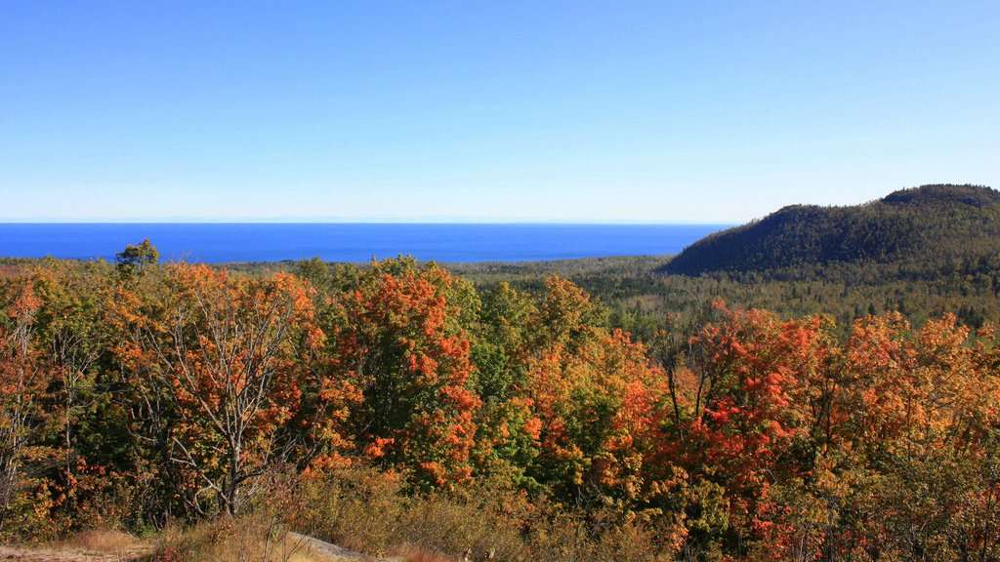

Amnicon Falls State Park
Description: Beautiful waterfalls and rapids tumbling over ancient rock formations.
Trail Info: Easy, flat, and under 1 mile.
Blue’s Comfort: Excellent. The flat terrain around the falls is very easy on senior joints.
Price: $11/day WI Park fee.
Big Manitou Falls at Pattison State Park

Description: Wisconsin's highest waterfall, plunging 165 feet into a spectacular gorge.
Trail Info: Easy, short paved walk to the main overlook.
Blue’s Comfort: Very accessible with smooth, paved paths.
Price: $11/day WI Park fee.
Ely’s Peak


Description: A rugged peak offering panoramic views of Duluth and the St. Louis River valley.
Trail Info: Difficult, featuring steep rock scrambles.
Blue’s Comfort: Too difficult for a senior dog to hike.
Price: Free.
Bardon Peak Overlook

Description: Drive right up to the Bardon Peak Overlook along Skyline Parkway for panoramic views.
Trail Info: Scenic drive (no hiking required).
Blue’s Comfort: Perfect. Blue can enjoy the view from the car.
Price: Free.
Spirit Mountain


Description: A major recreation area with excellent elevated views of the harbor and lake.
Trail Info: Drive right up to the Grand Avenue Chalet or pull off along Skyline Parkway.
Blue’s Comfort: Great! Flat areas around the chalet are easy to walk.
Price: Varies by activity.
Brewer Park


Description: A wooded city park featuring sections of the Duluth Traverse trail system.
Trail Info: Moderate, uneven dirt paths.
Blue’s Comfort: Okay for a slow sniff-walk on flat sections, watch for mountain bikes.
Price: Free.
Enger Park


Description: Beautiful manicured gardens centered around a 5-story stone observation tower.
Trail Info: Drive right up. Mostly paved and flat paths.
Blue’s Comfort: Perfect. Lots of soft grass and level ground.
Price: Free.
Great Lakes Aquarium

Description: Interactive exhibits highlighting the freshwater habitats of the Great Lakes.
Trail Info: Fully accessible indoors.
Blue’s Comfort: No dogs allowed inside (service animals only).
Price: ~$20/adult.
Harbor 360 Restaurant

Description: Waterfront dining spot offering fantastic elevated views of the harbor.
Trail Info: N/A.
Blue’s Comfort: No dogs allowed indoors.
Price: $20-$40 per person.
Canal Park Brewing Company

Description: Industrial-chic lakeside brewpub featuring a locally inspired menu.
Trail Info: N/A.
Blue’s Comfort: The outdoor patio is famously dog-friendly (dress warmly).
Price: $15-$30 per person.
Leif Erikson Park and Duluth Rose Gardens


Description: A beautiful lakeside park connecting to the Lakewalk with classic stone structures.
Trail Info: Easy, flat, and paved.
Blue’s Comfort: Excellent, with plenty of benches for resting.
Price: Free.
Glensheen Mansion

Description: A historic 39-room Jacobean estate situated on the shores of Lake Superior.
Trail Info: Easy walking on the estate grounds.
Blue’s Comfort: Service dogs only on the grounds and tours.
Price: $20+ per person.
Minnesota Point Beach
Description: A long, sandy beach located on the world's longest freshwater sandbar.
Trail Info: Flat sandy walking right from the parking area.
Blue’s Comfort: Great! Soft sand is gentle on older paws.
Price: Free.
Hawk Ridge Nature Reserve
Description: A premier location on the hillside for viewing the fall raptor migration.
Trail Info: Drive right up and view from the main overlook area.
Blue’s Comfort: Very accommodating. Blue can relax right by the car.
Price: Free (donations accepted).
Kitchi Gammi Park
Description: Also known as Brighton Beach, featuring a classic North Shore rocky shoreline.
Trail Info: Drive right along the shore with easy access points.
Blue’s Comfort: Good, though the rocky beach itself might be uneven.
Price: Free.
Betty’s Pies


Description: A famous North Shore institution known for homestyle diner food and legendary pies.
Trail Info: N/A.
Blue’s Comfort: The outdoor patio is typically dog-friendly.
Price: Inexpensive to Moderate.
Silver Creek Cliff Tunnel Trail


Description: A paved segment of the Gitchi-Gami trail wrapping around the outside of the highway tunnel.
Trail Info: Easy, paved, 1-mile round trip.
Blue’s Comfort: Very easy for an older dog to navigate.
Price: Free.
Gooseberry Falls State Park

Description: Spectacular, highly accessible tiered waterfalls that are a must-see.
Trail Info: Easy, paved paths a short distance from the parking lot.
Blue’s Comfort: Highly recommended; very accessible and smooth.
Price: Free at visitor center.
Split Rock Lighthouse State Park
Description: The iconic Minnesota lighthouse perched on a dramatic 130-foot cliff.
Trail Info: Paved but hilly trails.
Blue’s Comfort: Allowed in the park, but not in the historic buildings.
Price: MN State Park fee.
Palisade Head

Description: Towering volcanic cliffs plunging directly into Lake Superior.
Trail Info: Drive right to the top parking lot! No hike required.
Blue’s Comfort: Perfect for older dogs, but keep on a tight leash near edges.
Price: Free.
Tettegouche State Park

Description: Dramatic coastlines and the roaring Baptism River.
Trail Info: Stick to the flat visitor center area and the short path to the river mouth.
Blue’s Comfort: Good if you avoid the steep stairs on the outer trails.
Price: MN State Park fee.
Illgen Falls
Description: A beautiful, lesser-known 40-foot waterfall located just off the highway.
Trail Info: Moderate, 0.5-mile dirt path.
Blue’s Comfort: Doable if taken slowly, but watch for tree roots.
Price: Free.
Caribou Falls State Wayside

Description: A scenic river hike ending in a beautiful waterfall.
Trail Info: Moderate, ends with a large set of wooden stairs.
Blue’s Comfort: The stairs might be too tough for a 12-year-old dog.
Price: Free.
Britton Peak

Description: While the peak hike is steep, the parking lot area itself offers beautiful foliage views.
Trail Info: Enjoy the views straight from the lot.
Blue’s Comfort: Easy if you skip the steep climb.
Price: Free.
Oberg Mountain

Description: Famous loop trail offering sweeping panoramic views of the fall colors.
Trail Info: Moderate, 2.2-mile loop with a steady incline.
Blue’s Comfort: Pushing limits, but doable if taken at a very slow pace.
Price: Free.
Cascade Falls

Description: A beautiful series of cascading waterfalls along the Cascade River.
Trail Info: Easy to moderate near the highway.
Blue’s Comfort: Good accessible options if you stick to the lower trails.
Price: MN State Park fee.
Pincushion Mountain Overlook


Description: You don't need to hike the mountain! There is a stunning scenic overlook directly at the parking lot with 180° views of Lake Superior.
Trail Info: Drive right up.
Blue’s Comfort: Absolutely perfect. Views without the steps.
Price: Free.
Mount Josephine Overlook


Description: Instead of the grueling hike, stop at the highway wayside rest overlook for beautiful views of the Sussex Islands.
Trail Info: Drive right up.
Blue’s Comfort: Extremely easy.
Price: Free.
Grand Portage State Park

Description: Home to High Falls, Minnesota's tallest waterfall, located right on the Canadian border.
Trail Info: Easy, 1-mile round trip on a flat paved/boardwalk path.
Blue’s Comfort: Flawless. The flat boardwalk is ideal for senior dogs.
Price: Free.